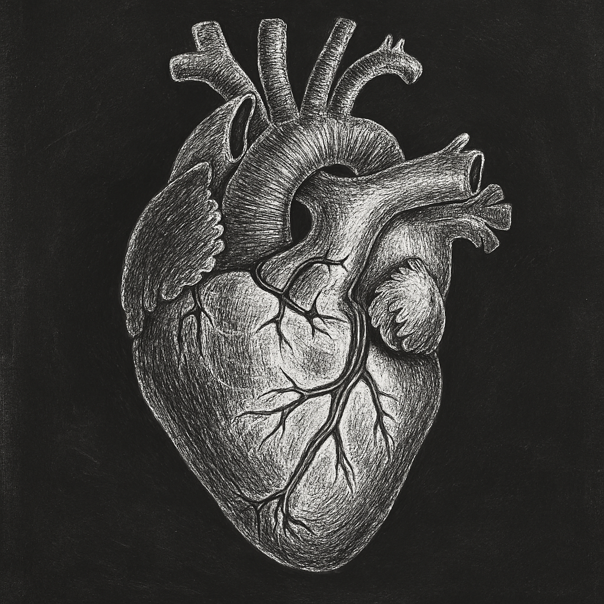
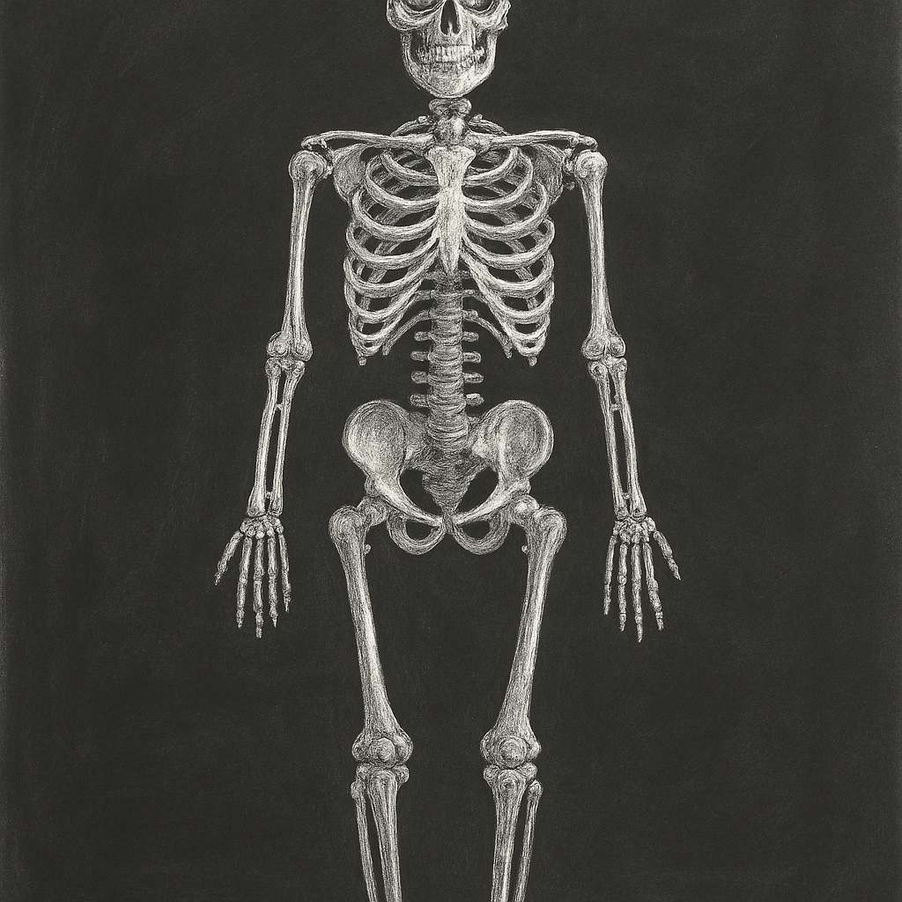

Bem-vindos, Estudantes de Medicina!
Este site foi criado especialmente para vocês acompanharem seu progresso acadêmico na disciplina de Funções Biológicas CEP IV. Aqui você encontrará suas notas, situação atual e mensagens de incentivo para continuar sua jornada médica.

Suas Notas e Progresso
| Avaliação | Nota | Nota Final (arred.) | Faltam para 14 | Situação | Mensagem de Incentivo |
|---|
Status Geral
Carregando...
Média Final
Carregando...
Total NPC
Carregando...
Mensagem Especial
"A medicina é uma profissão que exige dedicação, perseverança e muito estudo. Cada nota, cada avaliação, cada desafio superado é um passo a mais na sua formação como futuro médico. Continue firme em seus objetivos!"
